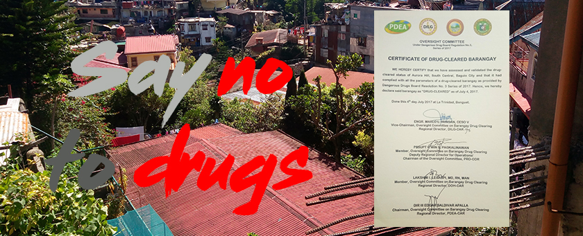
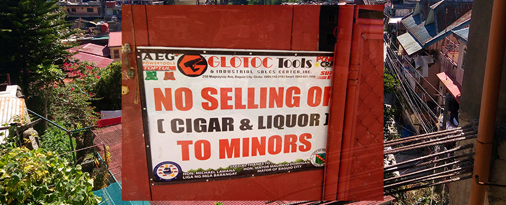

Every time the barangays holds an event or a meeting they always tell the community
to stay away from drugs. They conduct events where a policeman is the spoke person, educating everyone about the bad effects of drugs and
he/she also gives tips on how not to become a victim. The barangay officials make sure that their community will be enlightened about the effects of drugs because their in the top fifteen list of drug infected barangays in Baguio City as of 2017. Thus, they do everything to minimize or make their barangay drug-free. The barangay officials are proud to say that they are drug-cleared but is not drug-free. Drug cleared barangays are defined as barangays that were previously drug-affected and are still subjected to drug clearing operations.
No Smoking Policy
The barangay's campaign

Aside from illegal drugs, the barangay also promotes the anti-smoking law, an ammended version of the ordinanace number 8 of 2008 which is locally implemented by the local government of Baguio. The law doesn't only cover cigarettes but also e-cigarettes and vape. This law promotes public health and safety and tobacco control. Don't you hate it when you get to inhale the fumes of the cigarrete if your just walking by? However, smokers are still allowed to smoke inside private properties.
No selling of cigar and liquor to minors
The barangay's campaign

Every time the barangays holds an event or a meeting they always tell the community
to stay away from drugs. They conduct events where a policeman is the spoke person, educating everyone about the bad effects of drugs and
he/she also gives tips on how not to become a victim. The barangay officials make sure that their community will be enlightened about the effects of drugs because their in the top fifteen list of drug infected barangays in Baguio City as of 2017. Thus, they do everything to minimize or make their barangay drug-free. The barangay officials are proud to say that they are drug-cleared but is not drug-free. Drug cleared barangays are defined as barangays that were previously drug-affected and are still subjected to drug clearing operations.